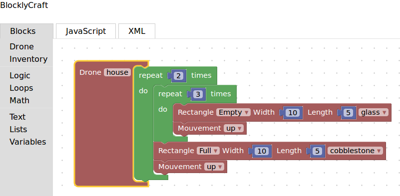

risorse | programmare minecraft in javascript
Per programmazione in Minecraft si intende un sistema di gioco nel quale le azioni del giocatore non vengono comandate attraverso il mouse e la tastiera, ma specificandole come sequenze di istruzioni di un particolare linguaggio di programmazione — Java, JavaScript, Lua, Python, … Il vantaggio è che con poche istruzioni di codice è possibile ottenere artefatti la cui costruzione manuale richiederebbe invece parecchio tempo.
Il plug-in più diffuso per la programmazione JavaScript di Minecraft è ScriptCraft, sviluppato da Walter Higgins. L'ultima versione disponibile – liberamente scaricabile dal sito ufficiale – è compatibile con i server CanaryMod v. 1.8.0 e Spigot 1.9.
Scaricato l'archivio scriptcraft.jar lo si copia nella cartella plugins del server Minecraft prescelto (in questo caso uno Spigot 1.9.4). Lanciato il server dal terminale, si attende il messaggio che conferma il caricamento del plug-in di ScriptCraft e il completamento dell'avvio Spigot:
> java -jar spigot-1.9.4.jar ... [16:00:06 INFO]: [scriptcraft] Enabling scriptcraft v3.2.0-2016-06-08 [16:00:09 INFO]: Done (10.128s)! For help, type "help" or "?" [16:00:10 INFO]: [scriptcraft] js-patch setTimeout() test complete >
A questo punto ScriptCraft è stato caricato, ma non è ancora pronto per essere utilizzato: è prima necessario assegnare agli utenti interessati i diritti di operator. Per elevare un utente a tale stato è sufficiente impartire il comando op, seguito dal nome dell'utente, nella finestra del terminale del server:
> op <nome-utente> [16:10:35 INFO]: Opped <nome-utente> >
Alternativamente, si può inserire il nome dell'utente nel file ops.* del server (consultare la documentazione del server in uso per determinare il nome completo e la posizione del file di configurazione degli operatori).
Una volta che il server Minecraft è avviato, si connette il client al server locale (selezionando la modalità di gioco Multiplayer, connessione Direct Connect, Server Address “localhost”); entrati nel gioco, scrivere nella chat:
/js echo(self, "Hello Minecraft!")
(la chat si apre automaticamente alla pressione del carattere «/»).
Codice JavaScript pronto per essere interpretato da ScriptCraft
Si conferma il comando premendo il tasto «Invio». Il codice JavaScript viene inviato al server che lo inoltra al plug-in ScriptCraft che a sua volta lo esegue:
L'effetto del comando echo
La chat permette di eseguire semplici comandi JavaScript. Per compiti più complessi conviene affidarsi agli script. Gli script sono file di testo che contengono codice JavaScript e che sono richiamabili dalla chat, purché vengano salvati all'interno della cartella scriptcraft/plugins (o in una sua sottocartella) della cartella del server Minecraft. Un semplice esempio di script per ScriptCraft è il seguente:
// file greet.jsp
function greet(player) {
echo(player, 'Hello ' + player.name);
}
exports.greet = greet;
Salvando il codice sopra riportato nel file greet.jsp all'interno della cartella scriptcraft/plugins, è possibile richiederne l'esecuzione direttamente dalla chat:
Dopo aver creato un nuovo script o aggiornato uno esistente, è necessario segnalare a ScriptCraft che il contenuto della sua cartella plugins è cambiato e obbligarlo così a ricaricare le nuove definizioni; il comando /js refresh() ha esattamente questo scopo.
Invocazione di (una funzione di) uno script ScriptCraft
Il codice viene eseguito alla pressione del tasto «Invio»:
L'effetto della funzione greet — nome utente oscurato per questioni di privacy ;)
Segue un esempio di configurazione che, oltre a forzare la creazione di mondi piatti e privi di mostri, imposta automaticamente la modalità di gioco creativa e disabilita l'autenticazione degli utenti (utile nell'uso di Minecraft in rete locale):
# completely flat worlds are best for building from scratch # bukkit/spigotmc level-type=FLAT # canarymod world-type=FLAT generate-structures=false # creative mode gamemode=1 pvp=false # turns off authentication (for classroom environments) online-mode=false spawn-npcs=false spawn-monsters=false
BlocklyCraft è un sistema di programmazione visuale di Minecraft basato su ScriptCraft.
Poiché BlocklyCraft contiene al suo interno una copia di ScriptCraft, i due plug-in non possono coesistere: di norma i server Minecraft non sono in grado di gestire più istanze dello stesso plug-in. Se si intende installare BlocklyCraft in un server che già contiene ScriptCraft, è necessario prima rimuovere quest'ultimo – la copia contenuta in BlocklyCraft sarà comunque accessibile agli utenti secondo le solite modalità.
BlocklyCraft funziona sia con CanaryMod che con Spigot, ma il secondo è quello consigliato.
BlocklyCraft presenta un'interfaccia simile a quella di Scratch: i programmi non vengono inseriti da tastiera ma costruiti aggregando tra loro blocchi di istruzioni alla stregua di mattoncini lego, operando direttamente con il mouse:
Esempio di script BlocklyCraft
L'interfaccia di BlocklyCraft risulta particolarmente adatta per i principianti e per coloro che non hanno rudimenti di programmazione. A richiesta è comunque possibile dare un'occhiata al codice JavaScript corrispondente allo script in lavorazione, basta spostarsi nella scheda “JavaScript”:
Codice JavaScript relativo allo script a blocchi
La doppia vista Blocks/JavaScript rende BlocklyCraft un valido strumento di transizione da un approccio amatoriale alla programmazione ad uno più professionale.
I blocchi disponibili sono tuttavia pochi, tant'è che l'unica attività automatizzabile è la costruzione di strutture, per quanto complesse: tutte le altre risorse disponibili in ScriptCraft sono precluse (console, eventi, moduli, ...). La realizzazione di script complessi è di fatto impraticabile, e per tale attività è imprescindibile l'accesso diretto a ScriptCraft via JavaScript.
Per installare il plug-in è sufficiente scaricare l'ultima versione dal sito ufficiale e, dopo averne verificato la compatibilità col proprio server, copiare il file blocklycraft.jar nella cartella plugins. Ricordarsi di eliminare il plug-in di ScriptCraft se presente, prima di avviare il server.
Avviato il server, aprire un browser e collegarsi all'indirizzo http://localhost:7070/; se l'installazione è avvenuta correttamente, apparirà la pagina dell'editor di BlocklyCraft. Creare un semplice script (Drone nella terminologia BlocklyCraft/ScriptCraft):
Il drone di test
Completata la definizione dello script, premere il pulsante rosso per verificarne la correttezza ed effettuarne il deploy, ovvero inviarlo al plug-in:
Messaggio di conferma dell'avvenuto deploy
In presenza d'uno o più errori apparirà una finestra contenente un messaggio esplicativo circa i problemi riscontrati, mentre il deploy verrà annullato.
Nota implementativa: il deploy ha l'effetto di inviare il codice JavaScript dei droni al plug-in BlocklyCraft, che li salva nella cartella scriptcraft/plugins/blocklycraft del server alla stregua di generici script di ScriptCraft, separandoli per indirizzo IP di provenienza.
Le definizioni dei droni sono conservate dal server fino al successivo riavvio. Alcune opzioni di privacy del browser utilizzato dall'utente potrebbero causare la perdita delle definizioni dei droni precedentemente inviati al server alla chiusura del browser.
Per eseguire il drone appena definito se ne indica il nome nel comando /jsp:
Il comando /jsp di esecuzione del drone di test
La costruzione di 3×4 blocchi di pietra appare subito dopo l'invio del comando:
La costruzione eseguita dal drone di test
ScriptCraft richiede la scrittura di codice JavaScript, così come RaspberryJuice impone la conoscenza del linguaggio Python. Prescindendo dalle vocazioni didattiche dei due linguaggi, l'indubbio vantaggio di ScriptCraft rispetto a RaspberryJuice è di consentire il lancio degli script direttamente dalla chat del client Minecraft; il secondo invece esige l'uso di una finestra di terminale. D'altra parte, ScriptCraft obbliga l'utente a salvare i propri script in una ben precisa cartella del server, cosa non sempre scontata: l'utente potrebbe non disporre dei diritti di scrittura nella cartella del server Minecraft, oppure questo potrebbe girare su un altro computer. RaspberryJuice non pone alcun vincolo sulla cartella di salvataggio degli script, permettendo quindi all'utente di eseguirli anche se la cartella del server non è direttamente accessibile (purché ovviamente munito dell'apposito plug-in).
A discapito di RaspberryJuice va citato il fatto che anche nel caso si utilizzi un server remoto opportunamente configurato, è necessario installare nel client i binding Python dell'API del plug-in (ovvero i file cartella resources/mcpi/api/python/modded dell'archivio di RaspberryJuice); l'uso di ScriptCraft in condizioni analoghe non richiede invece alcun intervento sul client.
Sebbene BlocklyCraft si basi su ScriptCraft, le funzionalità che mette a disposizione sono molto limitate: in pratica si possono realizzare solo costruzioni. Il vantaggio principale di BlocklyCraft rispetto a ScriptCraft è l'interfaccia visuale particolarmente intuitiva. L'uso in ambiente client/server è ancora più immediato: è sufficiente che l'utente si conetta con il suo browser all'indirizzo http://<NOME-SERVER>:7070 e può già iniziare a programmare.
Nota: per evitare la sospensione del client di Minecraft durante la redazione dei programmi, è conveniente porre a false il parametro pauseOnLostFocus nel file ~/.minecraft/options.txt.
Aggiornamento [20/09/2016]
Il server Spigot adotta uno strano comportamento quando eseguito nella JVM di Oracle, in particolare ricarica il plug-in di ScriptCraft ogni pochi secondi, causando il continuo riavvio del server HTTP di BlocklyCraft:
... [21:09:01 INFO]: Done (12,811s)! For help, type "help" or "?" [21:09:01 INFO]: [scriptcraft] js-patch setTimeout() test complete [21:09:04 INFO]: [scriptcraft] Disabling scriptcraft v3.2.0-2016-06-08 [21:09:04 INFO]: [scriptcraft] HTTP web server stopped [21:09:04 INFO]: [scriptcraft] Enabling scriptcraft v3.2.0-2016-06-08 ... [21:09:08 INFO]: [scriptcraft] HTTP web server for content in scriptcraft/www now available on http://127.0.1.1:7070/ [21:09:05 INFO]: [scriptcraft] Disabling scriptcraft v3.2.0-2016-06-08 [21:09:05 INFO]: [scriptcraft] HTTP web server stopped [21:09:05 INFO]: [scriptcraft] Enabling scriptcraft v3.2.0-2016-06-08 ... [21:09:06 INFO]: [scriptcraft] js-patch setTimeout() test complete [21:09:08 INFO]: [scriptcraft] HTTP web server for content in scriptcraft/www now available on http://127.0.1.1:7070/ [21:09:08 INFO]: [scriptcraft] Disabling scriptcraft v3.2.0-2016-06-08 [21:09:08 INFO]: [scriptcraft] HTTP web server stopped [21:09:08 INFO]: [scriptcraft] Enabling scriptcraft v3.2.0-2016-06-08 ... [21:09:08 INFO]: [scriptcraft] HTTP web server for content in scriptcraft/www now available on http://127.0.1.1:7070/ [21:09:08 INFO]: [scriptcraft] Disabling scriptcraft v3.2.0-2016-06-08 [21:09:08 INFO]: [scriptcraft] HTTP web server stopped [21:09:08 INFO]: [scriptcraft] Enabling scriptcraft v3.2.0-2016-06-08 ...
L'anomalia non si verifica quando si utilizza la JVM di OpenJDK.
Pagina modificata il 07/09/2016